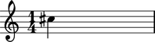

Notehead token input
Abjad For example:
Abjad groups Examples in the documentation that ask for notehead token input accept any of the input types shown here.
Note and pitch token instances and Abjad _NoteHead instances as input.
abjad> note = Note(0, (1, 4))
abjad> note.notehead = 13

pitch token instances and Abjad _NoteHead instances together under the heading of notehead token input.